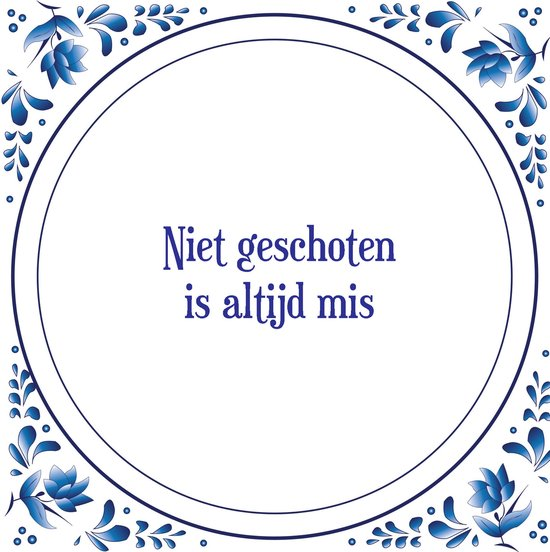

Niet geschoten is altijd mis
"Niet geschoten is altijd mis" wordt gebruikt om aan te geven dat het beter is om iets te proberen en te falen dan helemaal geen actie te ondernemen. Het impliceert dat er altijd een kans is op succes, zelfs als deze klein lijkt.
Oorsprong
De oorsprong van dit spreekwoord ligt in het idee dat als je niet probeert, je zeker geen kans hebt om te slagen. Het impliceert dat het de moeite waard is om risico's te nemen en actie te ondernemen, zelfs als de kans op succes klein lijkt.
Gebruik
Dit spreekwoord wordt vaak gebruikt om aan te moedigen tot actie en moedig gedrag. Het wordt zowel in informele als formele contexten gebruikt.
Voorbeelden
- Ze besloot de sprong te wagen en een eigen bedrijf te starten, want niet geschoten is altijd mis.
- Hij besloot het toch te vragen, want hij herinnerde zich het spreekwoord: niet geschoten is altijd mis.
Vertalingen
Hoewel dit spreekwoord specifiek is voor de Nederlandse taal, zijn er vergelijkbare uitdrukkingen in andere talen. In het Engels wordt soms gezegd: you miss 100% of the shots you don't take (je mist 100% van de schoten die je niet neemt).